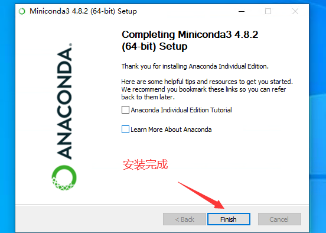
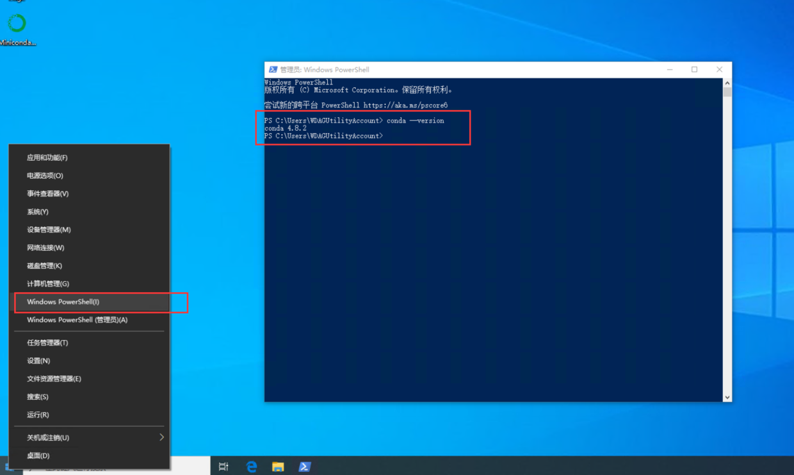

conda与rqdatac教程¶
什么是conda¶
conda是一个包、依赖、环境管理工具。方便python间环境隔离。
conda可以创建许多单独的python环境，这些python环境相互隔离，当其中一个python环境因为改动或其他原因错误时，不会影响其他python环境。
为什么装miniconda¶
下载miniconda¶
去清华源下载一个miniconda并安装
windows 4.8.2版miniconda
mac版 4.8.2miniconda
下载后 如下几个需要手动改一下

- 对于部分没有点添加到环境变量的小伙伴 请按如下操作添加
环境变量
例如默认路径为：”C:\Users\Administrator\Miniconda3”,那么需要添加的三个路径则是：
1）C:\Users\Administrator\Miniconda3；
2）C:\Users\Administrator\Miniconda3\Scripts；
3）C:\Users\Administrator\Miniconda3\Library\bin
第一个路径是Miniconda的根目录，也是最重要的路径！
* 如果你的环境变量中已经存在这三个路径，那么就不用添加了。
运行miniconda¶
右键开始菜单，打开Windows PowerShell (可选:输入 conda activate base启动base环境)

此时就已经有python了
可以输入 conda --version 看一看版本
pip配置默认镜像源¶
pip 默认下载源在国外，改为国内后，安装各种依赖会快很多。
* 在cmd命令行下 运行如下命令
pip config set global.index-url http://pypi.douban.com/simple
pip config set global.trusted-host pypi.douban.com
下载使用rqdatac¶
-
创建python 3.8 虚拟环境
conda create -n py38 python=3.8.2 -
激活环境
conda activate py38 -
安装rqdatac
pip install rqdatac
如果安装了zsh 请执行命令rehash -
安装ipython (ipython补全功能非常亲民)
pip install ipython
使用rqdatac¶
- 输入
ipython然后按如下操作
import rqdatac
rqdatac.init("手机号","密码")
rqdatac.user.get_quota()
#{'bytes_used': 742981, #已使用流量
# 'bytes_limit': 52428800.0, # 总流量
# 'remaining_days': 760, # 剩余使用天数
# }
rqdatac.all_instruments()
# order_book_id symbol ... listed_date de_listed_date
#0 M1901P3650 豆粕1901沽3650 ... 2018-04-10 2018-12-07
#1 SR1901C4900 白糖1901购4900 ... 2018-04-17 2018-11-26
#2 SR1907C5400 白糖1907购5400 ... 2018-01-17 2019-05-27
#3 M1907P2900 豆粕1907沽2900 ... 2018-07-17 2019-06-10
rqdatac.instruments("000001.XSHE")
# Instrument(order_book_id='000001.XSHE', industry_code='J66', market_tplus=1, symbol='平安银行', special_type='Normal', exchange='XSHE', status='Active', type='CS', de_listed_date='0000-00-00', listed_date='1991-04-03', sector_code_name='金融', abbrev_symbol='PAYH', sector_code='Financials', round_lot=100, trading_hours='09:31-11:30,13:01-15:00', board_type='MainBoard', industry_name='货币金融服务', citics_industry_code='40', citics_industry_name='银行')
rqdatac.get_price("000001.XSHE")
# num_trades limit_down volume ... high open low
#date ...
#2020-01-10 37440.0 15.11 58554845.0 ... 16.81 16.79 16.52
#2020-01-13 42233.0 15.02 87213336.0 ... 17.03 16.75 16.61
#2020-01-14 60290.0 15.29 130449366.0 ... 17.27 16.99 16.76
#2020-01-15 60129.0 15.08 85943912.0 ... 16.86 16.79 16.4
conda基本操作¶
-
查看版本信息
conda --version -
更新conda
conda update conda -
创建一个虚拟环境
conda create -n py38 python=3.8.2 -
激活新的虚拟环境
conda activate py38 -
列出环境信息
conda env list -
退出当前环境
conda deactivate -
删除虚拟环境
conda remove --name py38 --all